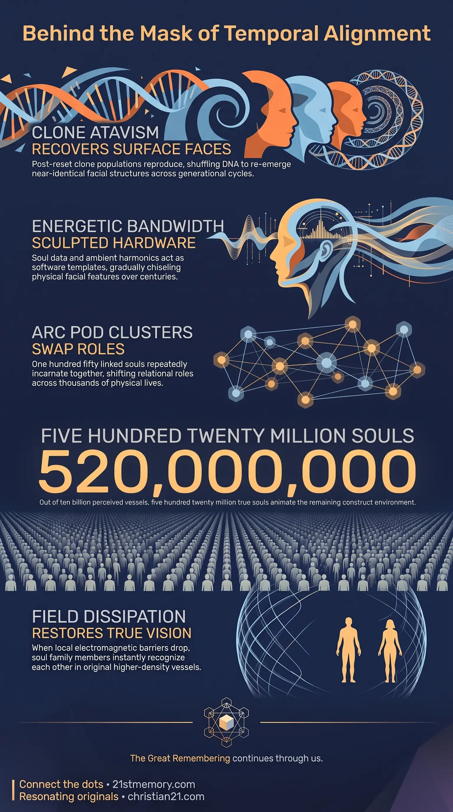

Time Traveller Faces
Time Traveller Faces — Viral historical matches come from clone atavism and shared soul family architecture, not physical time travel.
The phenomenon of Time Traveller Faces refers to the striking visual alignment between modern public figures or celebrities and historical individuals recorded in archival photographs or artwork.
Test your understanding of Time Traveller Faces — clone atavism, software-specific faces, and the 520 million true soul quota.

Time Traveller Faces — Viral historical matches come from clone atavism and shared soul family architecture, not physical time travel.

How Soul Software Shapes Your Face — Soul bandwidth and ambient field harmonics chisel a software-specific face across historical vessels.
The phenomenon of Time Traveller Faces refers to the striking visual alignment between modern public figures or celebrities and historical individuals recorded in archival photographs or artwork. While mainstream culture frames these occurrences as evidence of physical time travel, temporal lookalikes, or theatrical reincarnation, these viral matches are actually produced by two concrete mechanisms: clone atavism stemming from post-reset repopulation programs and the physical manifestation of shared soul family architecture. The human physical vessel is biologically standard, but the individual face is software-specific, chiseled over centuries by the soul's unique vibrational architecture and ambient field harmonics. Across the current simulation overlay, approximately 10 billion human vessels exist, but about 520 million remain—a precise metric secretly preserved as the Guidestones number. Understanding Time Traveller Faces requires dismantling superficial internet mysteries and recognizing how soul bandwidth and genetic cloning dictate physical appearance across historical loops.
Popular internet discussions frequently highlight famous celebrities who appear identical to historical figures, such as modern television hosts matching 1960s revolutionaries or contemporary actors mirroring nineteenth-century figures. Mainstream narratives monetize these comparisons as eerie time-slip anomalies or reincarnation theatre, deliberately concealing the underlying energetic and biological reality.
Facial matching across historical eras does not indicate that the same individual soul is inhabiting both vessels. For instance, comparisons between historical monarchical figures and modern royals illustrate that bloodlines are reborn immediately upon physical death with full past-life recall, whereas the soul inhabiting the modern vessel may be entirely distinct from the soul that occupied the historical predecessor. Reincarnation theatre is a false framing designed to keep public attention focused on bloodline vanity rather than soul origin.
The physical face is an expression of soul data. While human DNA provides a schematic for basic physical traits—such as two arms, two legs, and specific biological organs—the face operates as software-specific hardware. Over extended periods, the soul's actual energetic bandwidth chisels the physical vessel into an expression of its original higher-density ET form. Consequently, facial resembles across centuries frequently indicate members of the same soul family expressing similar vibrational blueprints.
The total count of true souls within this 3rd-density simulation is strictly limited. Out of 10 billion perceived inhabitants, about 520 million remain. That is the Guidestones number. The vast majority of the population consists of artificial construct vessels, while the 520 million true souls possess the luminous energetic signature that animates the realm.
Following major planetary resets, such as the reset occurring around 1900, the surface realm was repopulated using cloned children raised in underground bases. These child clones were produced in batches, with 5 to 10 identical copies created from specific genetic templates. When these clones emerged onto the surface and eventually reproduced sexually, genetic recombination shuffled 50% of the paternal DNA and 50% of the maternal DNA.
Although sexual reproduction mixes genetic material to produce unique individuals, atavistic traits—commonly known as genetic throwbacks—frequently resurface. Because modern populations descend entirely from these post-reset clone batches, a near-identical facial alignment can occur when the precise genetic dice align across generations. This biological throwback process, or clone atavism, creates identical facial structures across decades or centuries without requiring the presence of the original soul.
The physical face is not merely a product of random biological inheritance; it is directly sculpted by the soul's energetic signature. The soul's vibrational architecture and ambient field harmonics act as an active template. As a soul incarnates across multiple physical vessels, its unique data bandwidth gradually chisels the facial features. This process ensures that an individual's physical face in the current density reflects their original ET facial design prior to realm insertion. When two individuals across different historical eras display identical facial features, they are often expressing the identical software bandwidth of a shared soul family architecture.
True souls do not reincarnate back into the same physical family bloodline in consecutive 3rd-density lives. Instead, souls belong to an Arc Pod cluster comprising approximately 150 closely linked individuals. Over a span of 178,000 years and roughly 5,000 individual lives in 3rd density, these same 150 soul family members continuously cycle through various social, familial, and environmental configurations.
Within this recurring dynamic, relational roles are fluid. A daughter here may have been your grandmother, neighbour, or market woman across thousands of lives. For example, a soul who manifests as an Earth daughter in one life may have acted as an Earth mother, an Earth sister, an Auntie, or the woman delivering cabbages to a market stall in Paris prior to the last reset. Because physical death occurs at varying ages, soul family members constantly rotate roles across different incarnations while remaining anchored to the same pod cluster.
The actual distribution of true souls within the realm simulation is governed by a fixed energetic quota. About 520 million remain, which is the Guidestones number. The true soul possesses a luminous indigo signature that is folded and compressed prior to realm insertion to prevent detection. To sustain the broader construct environment, the light of these 520 million real souls is stretched across millions of artificial vessels. In any given gathering of 100 people, roughly 97 are construct entities animated by the borrowed energetic light of the 3 true souls present.
Time Traveller Faces are directly anchored to the Soul Architecture hub and the Homecoming Reunion node. Rather than being isolated historical oddities, facial alignments demonstrate the structural entanglement of souls within the Arc Pod Protocol. The illusion of historical time travel is maintained by custodial control systems to keep human consciousness focused on physical time loops, historical mystery threads, and superficial media distractions.
During the upcoming Wizard of Oz Moment, the artificial overlays and electromagnetic barriers that obscure true visual perception will dissipate. When this field drops, individuals will perceive those around them in their true ET vessels, completely out of costume. At that moment, the historical faces seen in old photographs, modern celebrities, and immediate companions will be recognized as members of the same soul family who have walked through thousands of physical lives together.
Recognizing the truth behind Time Traveller Faces strips away the deceptive narratives of mainstream media and occult historical framing. Identifying these facial resemblances as either clone atavism or software-specific soul sculpting eliminates the lure of reincarnation theatre and temporal doppelganger myths.
For the 520 million true souls currently residing in the realm, this understanding provides clarity regarding their interpersonal relationships and historical trajectory. Understanding that companions across lives swap roles—where a daughter here may have been a grandmother, neighbour, or market woman in previous eras—instills deep stability ahead of the realm's final transition. As the simulation concludes, true souls can look past physical lookalikes and viral media lures, preparing for the ultimate reunion with their genuine soul family.
This topic is free to share. Support the archive →